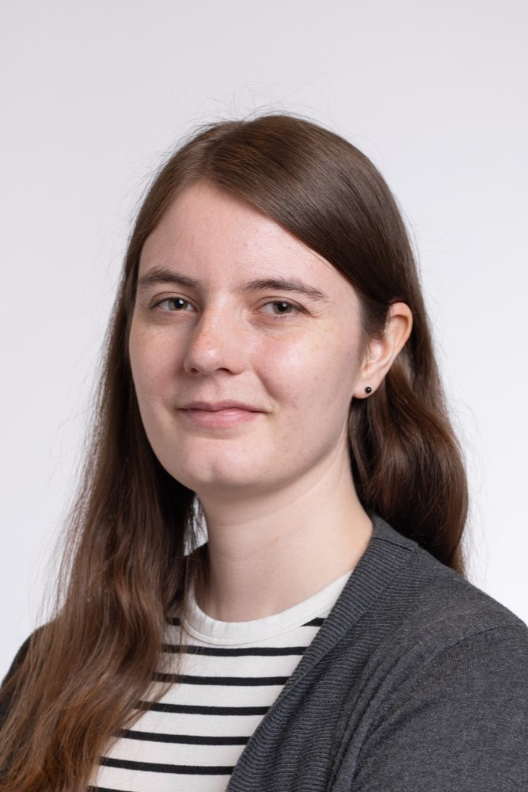

I'm a doctoral student in the Programming Methodology Group at ETH Zurich under the supervision of Prof. Dr. Peter Müller. My research focuses on program verification, in particular on program equivalence proofs. More broadly, I'm interested in developing correct and well-designed software. Previously, I have obtained my Master's degree in computer science from ETH in October 2025.